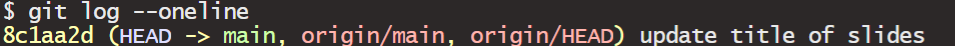

More GitHub + Intro to Packages
Lecture 10
2026-09-17
Checklist
– Did you engage with the prepare material (none today)
– Moodle quiz this week (due Friday at 11:59pm)
– Homework-1: assigned Friday (9-18); due Friday (9-25) on Gradescope!
– Proficiency test II (9-22)
– Go to the following website and favorite it: https://github.com/orgs/ST115-Fall26/repositories
> do you see a github-practice repo with your name attached?
> If yes, great!
> If not, please let me know after class– Clone the more-github-practice repo from our organization page!
Proficiency test II (9-22)
– Clone a repo
– Do stuff in the repo
> for loop
> Function writing
> Packages
– Have at least three meaningful commit messages (one after each task)
Same resources as last time (full sheet of hand-written notes)
Proficiency test II (9-22)
Questions are encouraged!
> Getting an error outside the scope of this course (uncommon; Nick will help)
> Getting an error that you should know how to fix (Nick will not help)
If you can’t get code to run…
> You can still show your work by using code chunk arguments to stop the code from evaluating
Turn in PDF on Gradescope by end of lab.
Proficiency test II (9-22)
I will create you a repo within the organization called Proficiency practice today
You will have a proficiency-test-II repo for the test in our organization, Tuesday
If you can not clone a repo, you can still earn partial points on the test by completing tasks, and turning in the test
Your lowest score will be dropped
Questions
Warm up
– Pull
– Stage
– Commit
– Push
In GitHub, how can we define each of these processes?
Warm up
– Pull - take every file in the repo and pull it to your local computer
– Stage - choose which changes you want to include in your next commit.
– Commit - save the changes you have staged
– Push - push them up to your repo
Warm up
Go to Moodle and download the jpg file from the Week-5 section.
– Upload this directly to GitHub
– Practice pulling it down locally!
Tips
As we learn GitHub, staging, committing, and pushing everything is often a good habit because it keeps the local project and the GitHub repository synchronized.
Out of sync
When you are out of sync, you can create something called a merge conflict. These are less common when you are the only one working on the project, but it can happen!
A merge conflict happens when Git tries to combine changes from two versions of a file that contain conflicting edits.
What does this look like?
Merge conflict
GitHub: A
Computer: A
Merge conflict
You edit your .qmd file and changed “This project analyzes student performance.” to “This project analyzes student achievement.”
Computer: A → B
GitHub: A
Merge conflict
You edit your .qmd file on a DIFFERENT computer/DIRECTLY in GitHub and changed “This project analyzes student performance.” to “This project analyzes student outcomes.”
Computer: A → B
GitHub: A → C
Merge conflict
Not staging all changed files → repositories may become out of sync.
Conflicting changes to the same parts of a file → potentially a merge conflict.
The flow
git pull
↓
Work/render
↓
git add -A (terminal)
↓
Commit (with a message)
↓
Push
Questions
More practice
– Answer the task question
– Render
– Stage
– Commit (with a message)
– Push
– Check out your repo!
Questions
Takeaway
– What is Git and GitHub?
– Why should we use Git/GitHub as statisticians?
– Why did we have to set up a SSH key?
– What does interacting with GitHub look like?
Creating your own repo
Creating your own repo
I can make repos for you because you are part of a ST-115 organization. In the future, you will create your own repos for your collaborative projects!
– How to make them
– What some of the settings mean
– How to invite people!
Questions
Packages
Packages
Think of R itself as a basic toolbox. Packages are like specialized toolkits that you can add when you need them.
There are two steps you need to remember with packages:
– install.packages()
– library()
Packages
Most of the time, you install R packages from CRAN, which stands for the Comprehensive R Archive Network.
You don’t usually have to visit a website yourself. R can download the package for you.
Packages Exercise
Click on the Packages tab in RStudio…
… what do you notice?
We want more packages
We are going to download the dplyr package from CRAN. Let’s do it together! But first, let’s try and run this code! I promise it works…
Demo
Go to the Packages tab and un-check dplyr
Next, run the following two sets of code, independently from each other. What do you notice?
Demo
Does this work? What’s going on?
Takeaway
– When do we install packages?
– When do we library packages?
– When might using :: be useful?
Takeaway
– You only need to install the package once
– You need to load the package every time you open a new session
– If it’s a one-off, you don’t need to load the entire package!
– Packages have help files!
if time
More GitHub
These will NOT be on the proficiency test II. These are more advanced GitHub topics that I hope we slowly work into your workflow thorughout the semester + beyond.
Go Back
git restore filename - This discards your uncommitted changes to that file
Let’s demo this!
Go Back
git log --oneline
Note: press q to return the terminal to a place where it allows you to type
git revert #####
Example

git revert 8c1aa2d
Let’s demo this!
Note
Git may have opened a text editor rather than the commit history itself.
This can happen because Git sometimes opens an editor when it needs you to enter or edit a commit message.
Simply close the text editor and the change will take place.
Note: Because your file changed, it will close your file and you will have to re-open it on your computer.